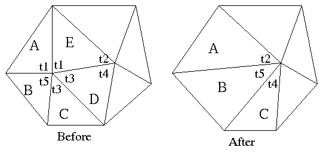
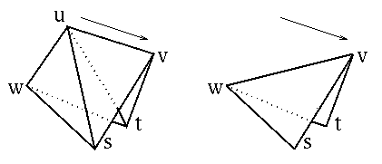

Questions, Answers, Feedback, Flames, and Followup
Here's some of the feedback/comments/flames I've had about the game developer article, poly reduction demo, and plugin:
- Hey this works damn great.
Good job. I downloaded the plugin (for 3DS Max)
and tried it on a model I made that had texture coords that took me a good
deal of time to get correct and then I ran your program on it and they
were all maintained:

Before (model by Luke Zalien)
After (reduced about 50%)
Hey, Thanks for the feedback. A note to the skeptic reading this page: The orientation of the gun is slightly different in the above rendered images. That's why the clip looks slightly different, because we're looking at it straight on in the second picture but at an angle (slightly behind the gun) in the first.
- Why is the algorithm in the bigdemo much faster? (in comparison to the bunnylod demo)
The bigdemo and sgibenchmark version use a heap sorted queue to store candidate vertices for collapsing. This makes the algorithm O(n lg(n)) instead of O(n*n). Which is what makes the algorithm slow for models with more than say a few thousand vertices. It was my intention to keep the bunnylod source code as simple as possible so people could learn from it. The heap queue adds a bunch of ugly code that would interfere with your ability to understand, port, or apply the algorithm as quickly as possible.
- The Algorithm of the BUNNYLOD creates holes (which are not created by your BIGDEMO), The teapot for example (the file teapot.ply). Would you please tell me if the BIGDEMO has further changes in the algorithm?
Yes, there is another difference between the demos. The BIGDEMO version has a minor extention to the collapse equasion in order to deal with border vertices. Those holes that appeared in the teapot were actually there (perhaps just as borders, cracks, or T-intersections) in the original model - they just get bigger. Since the original bunny had nice manifold topology without borders, the border extension was left out to keep the code (and game developer article) simple. In addition to a simple extension that I have proposed, there are many techniques described in graphics research proceedings that are quite robust.
- Look buddy, my model is dissappearing (starting from the outer-edges) as I reduce it. I dont have time to study your suggestions or any other reseacher's work. Just tell me what to do (in C++ speak)!
Starting from the BUNNYLOD demo, add the following code:
int Vertex::IsBorder() { int i,j; isborder=0; for(i=0;i < neighbor.num;i++) { int count=0; for(j=0;j < face.num;j++) { if(face[j]->HasVertex(neighbor[i])) { count ++; } } assert(count > 0); if(count==1) { return 1; } } return 0; } // and add the appropriate lines to the end of the cost function: float ComputeEdgeCollapseCost(Vertex *u,Vertex *v) { ... snip ... // the more coplanar the lower the curvature term // but ignore curvature if u is on a border but v isn't if(u-> IsBorder(); && sides.num > 1) { curvature=1; } return edgelength * curvature; } - Would you happen to have a version of progmesh.cpp that does handle texture coordinates?
Not handy. When I implemented texture (and other (surface
attribute) extensions I did the development within the game software (max
plugin and corresponding game engine software) at Bioware. A plugin
for 3DS Max (which deals with textures) is available.
Part of the problem in providing a general solution is that it depends on the
data structure used. Are indices to texture coordintes used or not? are they
generated procedurally? and so on...
- So how then would you deal with texture coordinates and material properties?
Surface discontinuities (texture seams, borders between smoothing groups in max, etc.) should be taken into consideration when determining the cost of an edge collapse. Actually, this isn't really any different than dealing with borders.
Furthermore, when edges are collapsed, the remaining adjacent faces should update texture information (and any other per-vertex-per-face attributes) using the deleted faces if possible. The following figure shows what I mean:

Update Texture Coordinates
Triangles A, B, and C are stretched by the edge collapse. Using the information from deleted triangles D and E along the collapsed edge, we are able to update texture coordinates for A and C. Since there is no match for B, it is left alone. Also note that since there isn't a match for B, we would have set our curvature term to 1 earlier when computing the cost of collapsing this edge.
Note that you may wish to explore some of the related research for a variety of solutions to this. Just recently, the Vis98 conference occured which had numerous papers all looking at these issues.
- I did have one question on your cost(u,v) function: is there a reason that the function includes a "divide by 2" term? Since the cost function's values generated are just going to be used relative to one another, the division seems unnecessary (i.e. since all cost() values will be divided by 2, the division by 2 is irrelevant).
You are correct. The only purpose for dividing by 2 is to normalize the term so it falls between 0 and 1. When certain situations arise (manifold or discontinuous surface attribute related) you may wish to ignore "curvature" which can be done just by setting this term to 1.
- ... It is unfortunate that you have started your lengthy PhD program, ...
Yea, I know.
Id like to mention that the topic of polygon reduction has been researched to death, and therefore I am persuing something a bit more interesting for my area of research. Expect more details in in the future.
- ... Thanks for the insight! I assume borders not only refers to the edges of polygon surfaces but material boundaries would apply as well. No?
Exactly, You got the idea.
- I believe most researchers are using the term "simplification" instead of "reduction".
"Decimation", "Reduction", "Simplification" - ok, whatever.
- The (edge collapse cost formula) presented in this paper has the nice property of being fast and memoryless. However, this new metric is rather ad hoc, as it does not correspond to any mathematically well-motivated property, and it is only shown to produce "satisfactory results" according to the authors.
Sure, the method is kinda ad-hoc (translation: "hack"). I experimented with a few different ideas - most didn't pan out. The formula I presented works well for its simplicity. People who are trying to implement or adapt this sort of technology into their application often prefer an easier solution. I have always suggested that people try some of the techniques presented in some of the research journals. Some of the people who have chosen this route have still thanked me for the intermediate step I have provided for them. Meanwhile, some others have been satisfied with the effectiveness of the algorithm offered here.
About not being "mathematically
well-motivated", that would apply to most techniques. There simply is no
mathematical definition of how good a reduced model looks compared to the
original. Furthermore, take a look at the the paper
Refer to the following picture to see where our formuala can break down.

As the points s and t move closer together the triangles usv and wsu become more coplanar as do the triangles tuv and twu. Consequently we are unable to capture the angle between segments wu and uv in our measured cost of collapsing edge uv.
- Is this algorithm limited to OpenGL? or can it be applied to such database formats at Multigen Flight ?
There's nothing limiting the algorithm to OpenGL. I just used OpenGL for a to render the model for the demo. My 3DS Max plugin version doesn't use OpenGL (or any render api for that matter). You should be able to adapt the technology to Flight.
In addition to this site there are other places where you can find out more polygon reduction information, research, commercial tools, and stuff.
Take a look at proceedings of SIGGRAPH or IEEE's
If you dont feel up to implementing the energy function from the original Progressive Mesh paper, another key technique you may want to look at is the use of quadric error metrics for edge collapse. A number of people are doing this now, the results are impressive - I think its probably a good way to go. The technique isn't too difficult, and I believe that the issues with surface attributes and discontinuities have recently been solved.
I would also like to mention that you should also consider other
technologies. For example, if
Model swapping is still a good way to achieve level of detail - there can be some overheads involved in morphing from one level to the next. Note that if you just swap models then you can easily take advantage of optimizations such as triangle strips.